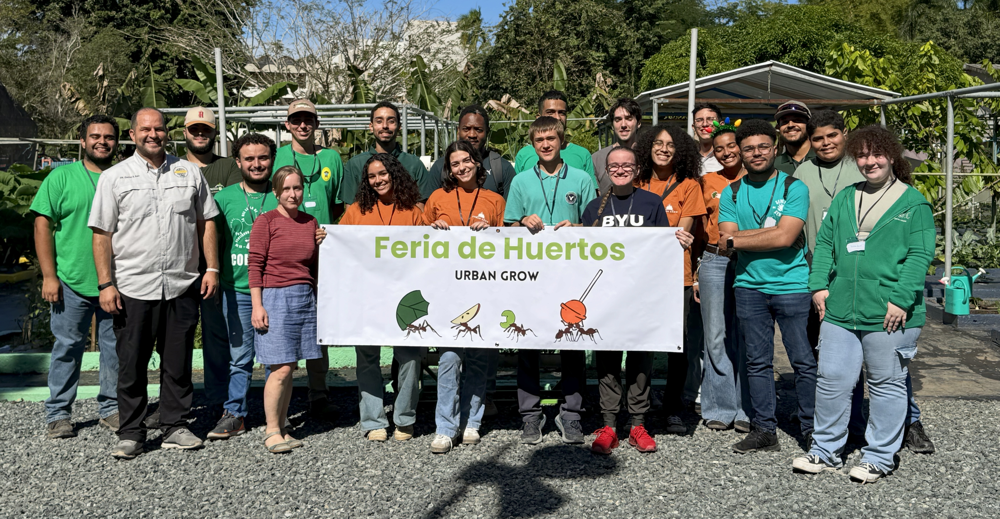

La Feria de Huertos tiene como objetivo enseñar a los niños y a las familias cómo crear sus propios huertos caseros o comunitarios. Para lograrlo, organizamos una serie de mesas con actividades educativas y dinámicas, en las que las familias con niños irán pasando por las diferentes mesas.

Entomología
La entomología es el estudio científico de los insectos y su relación con el medio ambiente.
Hay insectos beneficiosos igual que insectos dañinos. Los insectos beneficiosos polinizan las flores y cultivos, ayudando al crecimiento de los alimentos que comemos. Mientras que los insectos dañinos transmiten enfermedades que afectan los cultivos.
Algunos ejemplos de insectos beneficiosos son:
- 🐝 Abejas
- 🦋 Mariposas
Algunos ejemplos de insectos no beneficiosos son:
- 🪰 Mosca blanca
- 🐛 Áfidos

Horticultura
La horticultura es la ciencia y el arte de cultivar plantas. Nos enseña cómo cuidar las plantas para que crezcan sanas y fuertes. Las personas que estudian horticultura aprenden sobre la tierra, el agua, la luz del sol y cómo proteger las plantas de los insectos y las enfermedades. La horticultura nos ayuda a tener frutas deliciosas y flores hermosas.
Algunos ejemplos de cultivos hortícolas son:
- 🍅 Tomates
- 🥬 Lechuga
- 🌶️ Pimientos

Suelos
El suelo es la capa de la Tierra donde crecen las plantas. Está formado por pequeñas partes de rocas, hojas, animales, agua y aire. Un buen suelo le da a las plantas los nutrientes que necesitan para crecer fuerte. ¡Cuidar el suelo es muy importante, porque sin él no podríamos tener árboles, flores, ni alimentos! 🌱🌎
Algunos ejemplos de características de suelo son:
- 🍁Fertilidad
- 🪱Textura
- 🎨Color

Nutrientes
Los nutrientes son como vitaminas para las plantas: les ayudan a crecer fuertes y saludables. Si a una planta le faltan nutrientes, puede crecer pequeña, tener hojas amarillas o dar menos frutas y verduras.
Algunos ejemplos de los nutrientes más importantes para la planta son:
- 🌿 Nitrógeno
- 🪨 Fósforo
- ⚡ Potasio

Seguridad Alimentaria
La seguridad alimentaria significa que todas las personas tienen comida suficiente, saludable y segura para comer todos los días. Cuando cuidamos nuestros cultivos, protegemos el suelo y compartimos los alimentos, ayudamos a que nadie pase hambre.
Algunos ejemplos de los cultivos más importantes en Puerto Rico son:
- 🍌Plátanos
- 🥔Name
- 🥭Mangoes